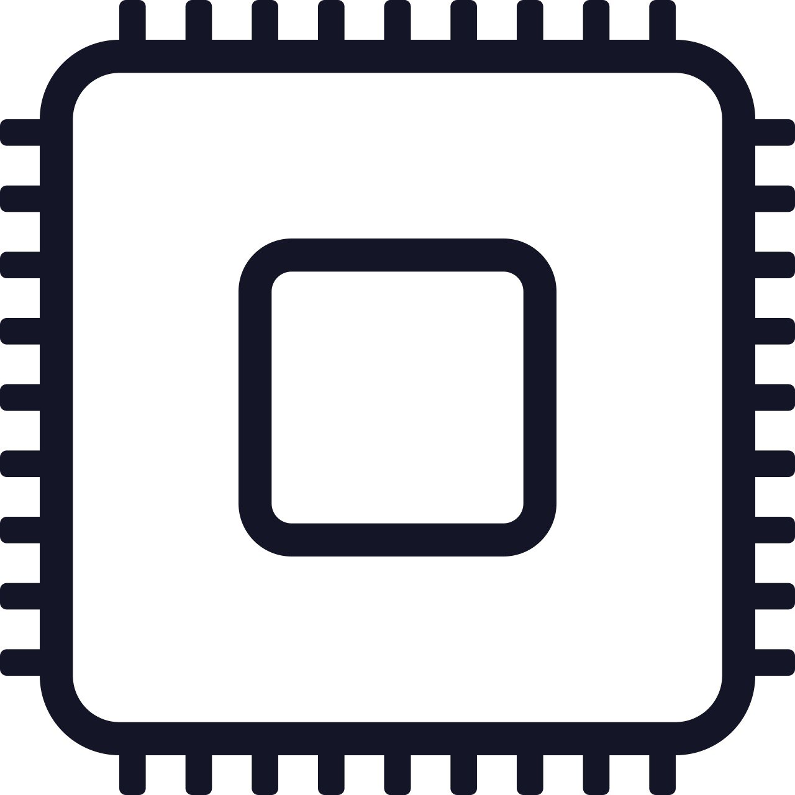

Собрать компьютер онлайн - с проверкой совместимости
Более 1000 комплектующих в конфигураторе ПК
Собрать компьютер - бесплатная сборка и быстрая доставка

Процессор
Процессор (CPU) – сердце компьютера. Чем выше частота тем быстрее обрабатываются данные, а количество ядер позволяет распределить нагрузку и повысить быстродействие всей системы. Для разгона существуют модели с разблокированным множителем. Больший кеш улучшает работу в тяжелых режимах.
Охлаждение
Охлаждения (cooler) – радиатор с прикреплённым вентилятором предназначенный для охлаждения процессора. Показатель теплоотвода (TDP) кулера не должен быть меньше показателя тепловыделения (TDP) процессора. А если процессор выбираете для разгона, то теплоотвод системы охлаждения должен превышать показатель минимум в два раза.
Материнская плата
Материнская плата (MB) – основа компьютера. На плату как конструктор собираются остальные комплектующие. Материнская плата не отвечает за быстродействие компьютера, но за функционал, от нее зависит количество нужных выходов и разъемов, поддержка режимов SLI, Cross-Fire, Raid, и конечно разводка системы питания.
Оперативная память
Оперативная память (Mem) – отвечает за то, с каким объемом данных в данный момент времени может работать процессор. Чем ее больше, тем быстрее работает компьютер